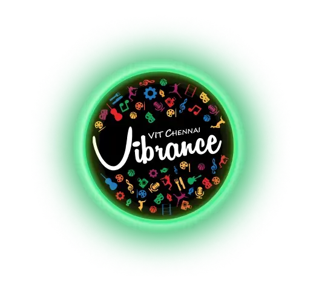
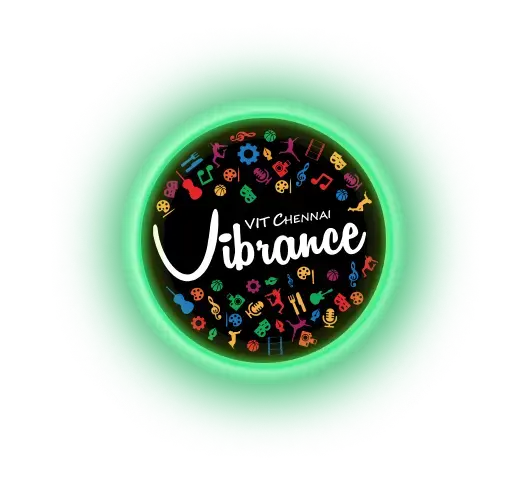

VIT Chennai is a world-class institution that has consistently been ranked among the top private universities in India.
With a focus on academic excellence, research innovation, and holistic student development, VIT Chennai offers a dynamic learning
environment that fosters creativity, critical thinking, and leadership skills.
The university provides a diverse range of undergraduate, postgraduate, and doctoral programs in various fields such as Engineering,
Business, Law, and Applied Sciences. The state-of-the-art infrastructure, advanced laboratories, and industry partnerships
make VIT Chennai a hub for innovation and cutting-edge research.
Beyond academics, VIT Chennai is known for its vibrant campus life. Students engage in various clubs, cultural activities,
sports events, and technical fests like GraVITas and Riviera, which bring together young minds from across the country.
The university also has strong placement records, with leading companies such as Microsoft, Amazon, and TCS recruiting students
year after year.
Whether you're an aspiring engineer, entrepreneur, scientist, or artist, VIT Chennai offers the perfect platform to
nurture your dreams and build a successful career.
environment that fosters creativity, critical thinking, and leadership skills.
 

VIT Chennai stands out due to its exceptional faculty, advanced research facilities, and global exposure.
VIT Chennai offers a variety of programs across different disciplines:
Top companies recruit from VIT Chennai every year: